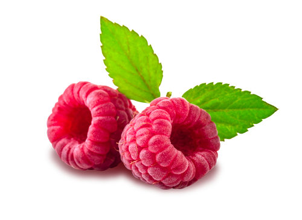
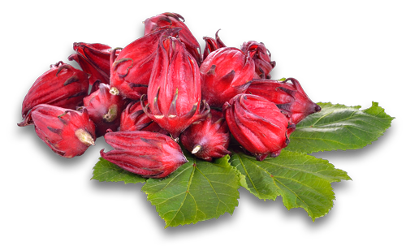
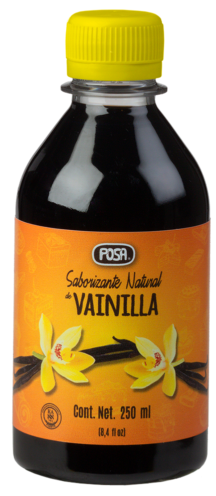
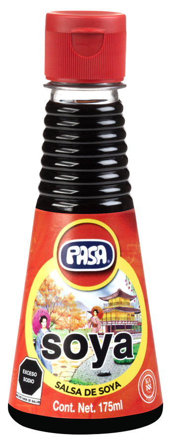
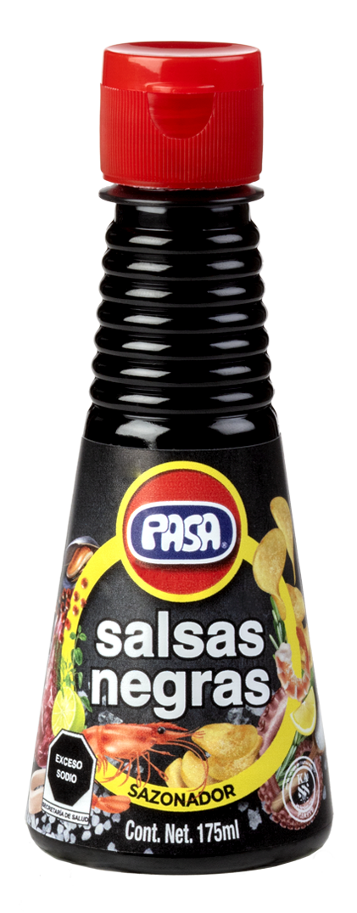
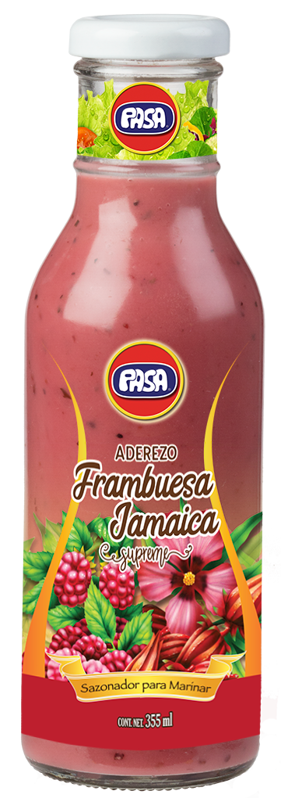
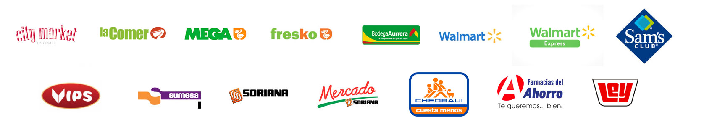

Vainillas, soyas, sazonadores y aderezos gourmet elaborados con materias primas de la más alta calidad, inclusive Kosher. Reconocidos en toda Latinoamérica.



Cuatro familias de productos, elaboradas con la misma dedicación desde 1985.

El sabor más popular del mundo, originario de México.
Ver línea →
Natural, light con 45% menos sal y picante con habanero.
Ver línea →
Salsas negras, ostión, tipo inglesa y jugo sazonador.
Ver línea →
Gourmet para marinar: mango, frambuesa-jamaica y más.
Ver línea →Nuestros productos transforman lo cotidiano en algo memorable.
Responde tres breves preguntas y te recomendamos el producto PASA ideal.
Disponibles en las principales cadenas de autoservicio y farmacias de México.

Elaboramos productos alimenticios líquidos para marca propia con la misma calidad que distingue a PASA.
Hablemos por WhatsApp